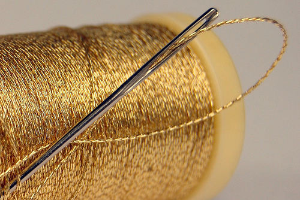
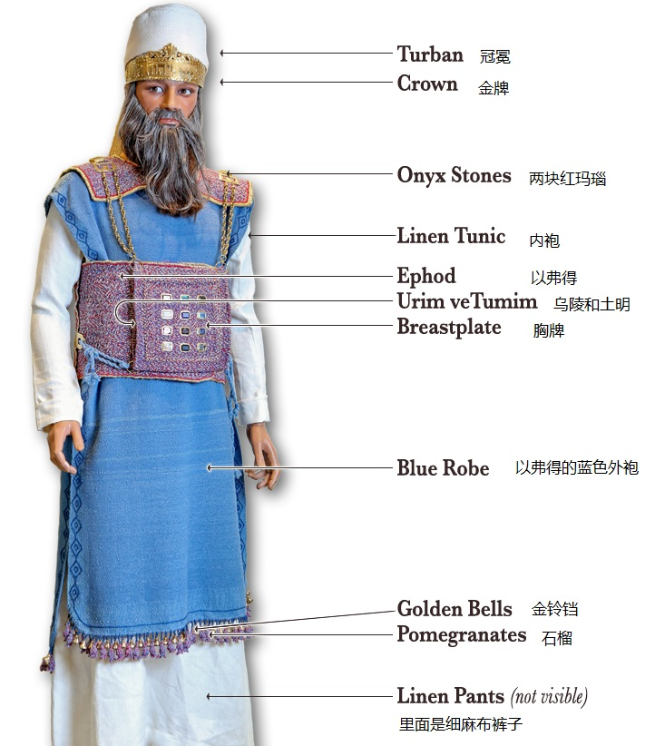
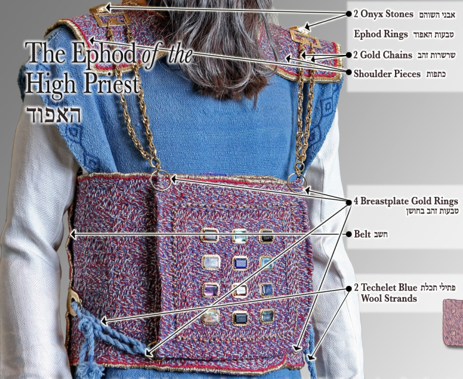
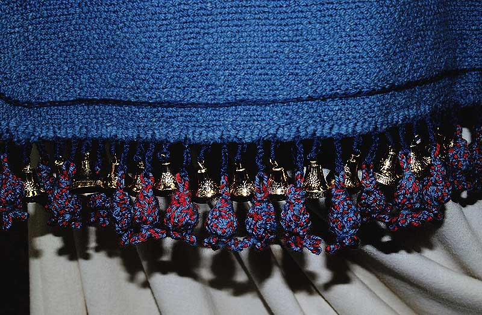
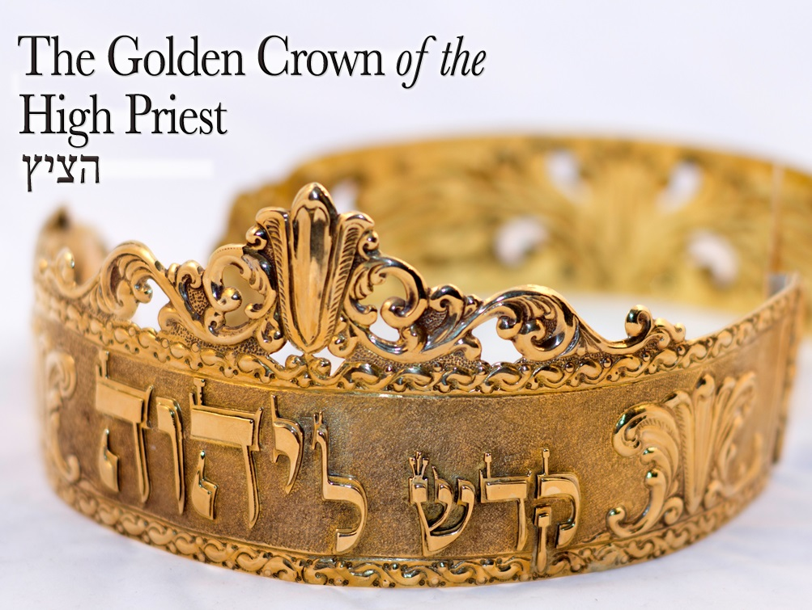

| 讀 | 默想 |
|---|---|
| 1 比撒列用藍色、紫色、朱紅色線做精緻的衣服，在聖所用以供職，又為亞倫做聖衣，是照耶和華所吩咐摩西的。 2 他用金線和藍色、紫色、朱紅色線，並撚的細麻做以弗得； 3 把金子錘成薄片，剪出線來，與藍色、紫色、朱紅色線，用巧匠的手工一同繡上。 |
「把金子錘成薄片，剪出線來」，這裡首次解釋金線的製造細節。  上圖：金線。金子有非常好的可鍛性和可塑性，24K的純金非常軟，可以錘成薄片、剪成金線。古埃及人已經瞭解這一點，可以用圓石頭把金子錘成最薄的金葉子。 |
| 4 又為以弗得做兩條相連的肩帶，接連在以弗得的兩頭。 5 其上巧工織的帶子和以弗得一樣的做法，用以束上，與以弗得接連一塊，是用金線和藍色、紫色、朱紅色線，並撚的細麻做的，是照耶和華所吩咐摩西的。 6 又琢出兩塊紅瑪瑙，鑲在金槽上，彷彿刻圖書，按著以色列兒子的名字雕刻； 7 將這兩塊寶石安在以弗得的兩條肩帶上，為以色列人做紀念石，是照耶和華所吩咐摩西的。 8 他用巧匠的手工做胸牌，和以弗得一樣的做法，用金線與藍色、紫色、朱紅色線，並撚的細麻做的。 9 胸牌是四方的，疊為兩層；這兩層長一虎口，寬一虎口， 10 上面鑲著寶石四行：第一行是紅寶石、紅璧璽、紅玉； 11 第二行是綠寶石、藍寶石、金鋼石； 12 第三行是紫瑪瑙、白瑪瑙、紫晶； 13 第四行是水蒼玉、紅瑪瑙、碧玉。這都鑲在金槽中。 14 這些寶石都是按著以色列十二個兒子的名字，彷彿刻圖書，刻十二個支派的名字。 15 在胸牌上，用精金擰成如繩子的鍊子。 16 又做兩個金槽和兩個金環，安在胸牌的兩頭。 17 把那兩條擰成的金鍊子穿過胸牌兩頭的環子， 18 又把鍊子的那兩頭接在兩槽上，安在以弗得前面肩帶上。 19 做兩個金環，安在胸牌的兩頭，在以弗得裡面的邊上， 20 又做兩個金環，安在以弗得前面兩條肩帶的下邊，挨近相接之處，在以弗得巧工織的帶子以上。 21 用一條藍細帶子把胸牌的環子和以弗得的環子繫住，使胸牌貼在以弗得巧工織的帶子上，不可與以弗得離縫，是照耶和華所吩咐摩西的。 |
1-31節記錄了製作聖衣的過程，完全遵照二十八 複習大祭司的聖衣  1-31節七次鄭重宣告「是照耶和華所吩咐摩西的」（1、5、7、21、26、29、31節），表明大祭司的聖衣完全照著山上的樣式，是顯明了基督的榮耀。  |
| 禱告：親愛的天父上帝，祢是啟示的神，感謝神，祢藉著設計祭司的外在的聖衣，讓我認識祢是生命的建造者，金線是榮耀的生命，細麻是聖潔的生命，我願意被祢建造成為榮耀神，過聖潔生活的人。（1～2節）親愛的天父：帶我進入你所揀選的服事，讓我的生命、性情、恩賜都進入成熟，準確的與你同工，完成你的旨意在地上，無論在教會或職場，都能彰顯你的大能。 為教會祝福～顏色：「比撒列用藍色、紫色、朱紅色線作精緻的衣服，在聖所用以供職；又為亞倫作聖衣，是照耶和華所吩咐摩西的。」(1節)天父上帝，藍色是屬天的顏色，祝福小組長的生命是屬天不是屬世界，我們的行事為人要與世界的價值有所不同；紫色代表尊貴的身份，祝福凡在基督裡的弟兄姊妹都是有君尊祭司的位份及恩賜；朱紅色是救贖的意思，願主耶穌的寶血救贖教會的每一個家庭都是屬祂的人。 | |
| 22 他用織工做以弗得的外袍，顏色全是藍的。 23 袍上留一領口，口的周圍織出領邊來，彷彿鎧甲的領口，免得破裂。 24 在袍子底邊上，用藍色、紫色、朱紅色線，並撚的細麻做石榴， 25 又用精金做鈴鐺，把鈴鐺釘在袍子周圍底邊上的石榴中間： 26 一個鈴鐺一個石榴，一個鈴鐺一個石榴，在袍子周圍底邊上用以供職，是照耶和華所吩咐摩西的。 |  |
| 27 他用織成的細麻布為亞倫和他的兒子做內袍，
28 並用細麻布做冠冕和華美的裹頭巾，用撚的細麻布做褲子，
29 又用藍色、紫色、朱紅色線，並撚的細麻，以繡花的手工做腰帶，是照耶和華所吩咐摩西的。
30 他用精金做聖冠上的牌，在上面按刻圖書之法，刻著「歸耶和華為聖」。
31 又用一條藍細帶子將牌繫在冠冕上，是照耶和華所吩咐摩西的。
 聖冠與裹頭巾上的金牌，刻著「歸耶和華為聖」 |
上圖：抄寫死海古卷的文士（Sofer）所使用的主前3-1世紀浸池（Mikvah），位於昆蘭（Qumran）曠野。摩西五經總共有304,805個字母，歷代文士必須保證每一個字母都與3500年前摩西寫的一樣，這是一項艱巨的工作，也是一項敬虔的工作。每次抄到神的名「耶和華」，文士都必須擦乾淨筆尖，沐浴後再到浸池淨身，表示靈性的潔淨。 所以本章聖經7次宣告「是照耶和華所吩咐摩西的」（出三十九1、5、7、21、26、29、31），文士就需要淨身7次。聖經不是隨便寫的，文士也不是隨便抄的，我們就應當認真地讀。 這段記錄製作聖衣的情形，對照神在山上的指示（參考二十八1-43），但沒有提到「烏陵和土明」（二十八30）因為「烏陵和土明」不是人手造的。 |
| 禱告：親愛的天父上帝，感謝祢愛我，我相信上帝是要提醒我，可以用石榴表達對神的愛(參歌7:12)。（默想～石榴釘在袍子的底邊，當大祭司走路時，石榴晃動，表示他所做的每一件事都是為著愛主而做的。鈴鐺是金子做的，大祭司每走一步都能聽見，所做的每一件事都是敞開的，他有沒有動大家都知道。）願我們做的每件事都是敞開的，都是要為了愛神。(24-25節) 為教會宣告：願我們教會和家庭的頭，都能承擔起大祭司的責任，願他們全身上下、從頭到腳都是聖潔的。願我們的心思意念要完全歸耶和華為聖。(v.27-28)奉耶穌基督的名禱告，阿們。 | |